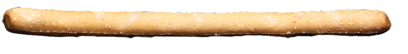
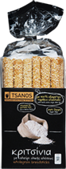

τσaνάκια
με σπανάκι με σπανάκι με σπανάκιμε σπανάκιμε σπανάκιμε σπανάκιμε σπανάκιμε σπανάκι

Συστατικά: Αλεύρι σίτου, εξαιρετικό παρθένο ελαιόλαδο, σπανάκι, κρασί, φυτικές ίνες βρώμης, μπέϊκιν πάουντερ, νερό, αλάτι
Μπορεί να περιέχει ίχνη από σουσάμι και ξηρούς καρπούς.
100% έξτρα παρθένο ελαιόλαδο
Πλούσια σε διαιτητικές ίνες

Το προϊόν διατίθεται σε κιβώτιο 12 συσκευασιών των 240γρ.